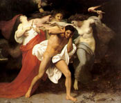

Евменіди - милостиві, доброзичливі богині - одна з назв жіночих божеств, найбільш відомих під ім'ям іриній, у римлян фурій, що означає гнівні, люті, богині-месниці; іменуються також величними (??????), високоповажні (??????). За Гесіодом, Евменіди - дочки землі, заплідненої краплями крові найстарішого божества Урана, оскопленного сином його, Кроном. Це - пояснювальний міф пізнішого походження, приурочують родовід Евменід до першого в світі насильства проти батька. За Есхілу, Евменіди - дочки Ночі; Софокл називає їх дітьми мороку і землі. У пізніх грецьких міфах, Евменіди - земні божества, що знаходяться в тісному зв'язку з споконвічними правилами і підвалинами людського співжиття.
Вони невсипно спостерігають за тим, щоб від століття встановлені відносини між старшими і молодшими, батьками і дітьми, багатими і бідними, благоденства і нещасними, що не були нарушаемості до вигоди одного боку на рахунок іншої. Є Евменіди батька, матері, батьків; також дітей, жебраків, тобто всякого, хто ображений і чия кривда кричить про помсту. Криків і прокльонів жертви слухають Евменіди і переслідують винного невтомно і пощади не тільки на землі, але і в пеклі після смерті, поки міра помсти не збудеться. Уже в Іліаді богині-месниці живуть в пеклі. "Бродячому в темряві", де гніздяться злочину, "жорстокими", "лютими", "згубними" називаються вони у Гомера. Одна з Евменід носить ім'я Мегери.
У малюнках на вазах Евменіди неодноразово зображуються в ролі Наказ божеств в пеклі. Зовнішній вигляд богинь, лютих, кровожерливих і нещадних, вселяв жертвам жах і огиду. Старі, сиві, з злісним кривавим поглядом, зі зміями у волоссі, Евменіди або гавкають як собаки, або ревуть, як розлючені бики; змії обвивають їх тулуб, повзуть по плечах або в руках богинь шиплять і з відкритою пащею тягнуться на жертву, а іноді Евменіди зображуються з бичем в руці, з факелом, який висвітлює шлях в гонитві за винним. Піфія в жаху біжить з святилища Аполлона побачивши Евменід, що розташувалися біля жертовника. Аполлон жене їх з свого храму туди, де винних стратять, де лунають стогони змучених злочинців. Чи не одною смертю карають богині: з моменту вчинення злочину вони невідступно переслідують винного, завдаючи йому болісними страждання, фізичні і душевні, навіть за труною. Кров вбитої матері ще не засохла на руках вбивці - а Орест відчуває вже терзання совісті, і що насуваються "люті собаки матері" валять його в невимовний жах. Евменіди - божества "швидкі", "багаторукі", "многоногие", "з мідними ногами" і т. П.
За словами Геракліта, Евменіди пильно стежать за тим, щоб і у зовнішній природі все залишалося в своїх кордонах. Евменіди карають клятвопорушення і будь-яке порушення покладеної людині заходи. Звідси зіставлення Евменід з богинями долі. "Людині з чистими руками не повинно боятися нашого гніву; життя його протікає мирно. Ми, всюдисущі і потужні богині, пам'ятаємо скоєне зло, вселяє страх лиходієві і недоступні благань його. Шануй вівтар правди і не потопчи його нечестивої ногою, спокушаючи користю, бо за злочином послідує покарання і відплата. Шануй батьків, радо приймай мандрівника під дахом твоїм. справедливий не буде нещасливий ". Трагедія Евменіди, звідки витягнуті ці слова, укладає собою трилогію Есхіла Орест, рясно джерело наших відомостей про Евменід. Богині жадають крові матереубійци Ореста, вони женуться за ним з Аргоса в Дельфи, з Дельф в Афіни, і тільки втручання "юних" божеств, Аполлона і особливо Афіни, жалісливих, що розрізняють спонукання до дії, упокорює лють "найстаріших" божеств і рятує Ореста, помститися за смерть батька по навіюванню Аполлона.
Перше примирення богинь, що карають злочин без уваги до його мотивами, трагік відносить до часу заснування найдавнішого судилища улюблених громадян. У наступного за Есхілом трагіка, Софокла, ті ж богині милостиво приймають у своїй гаю біля Афін іншого страждальця, Едіпа, що викупив мимовільну провину лихами і душевними стражданнями (Едіп в Колоні). Під ім'ям милостивих Евменіди вшановувалися в Сикионе і в інших місцях Пелопоннесу. У міру пом'якшення вдач нещадні месниці-богині самі знаходять можливим до уваги до душевного стану винного і до умов правопорушення звільнити від покарання кричущі за зовнішнім виглядом злочину. У Евріпіда (Орест) Евменіди - терзання обуреної совісті злочинця.